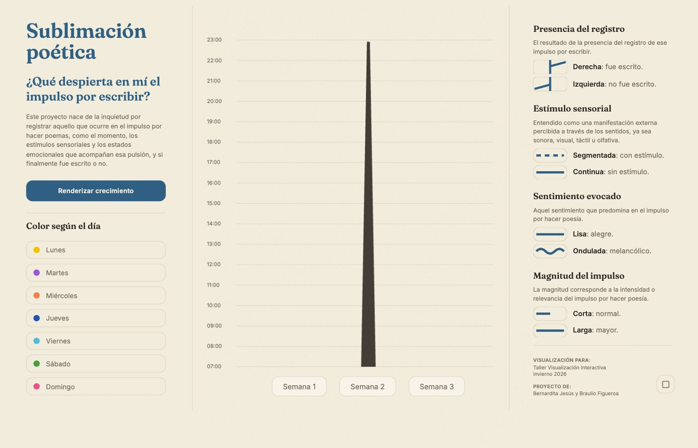
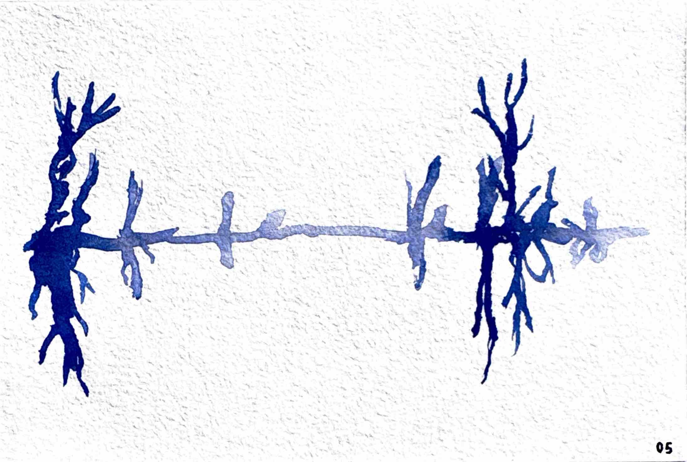
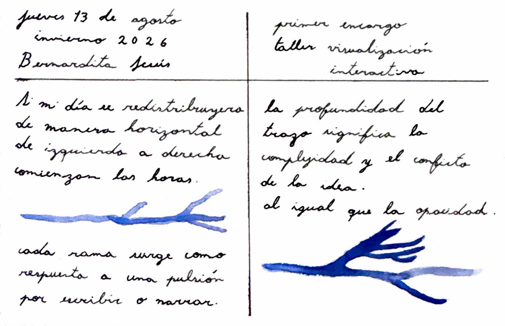
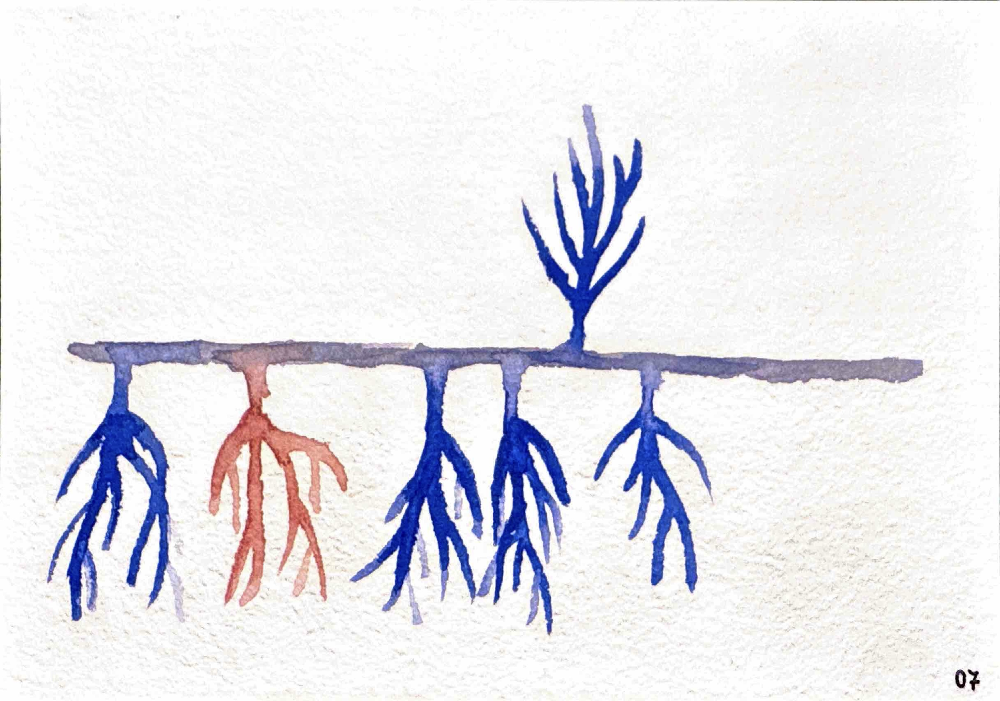
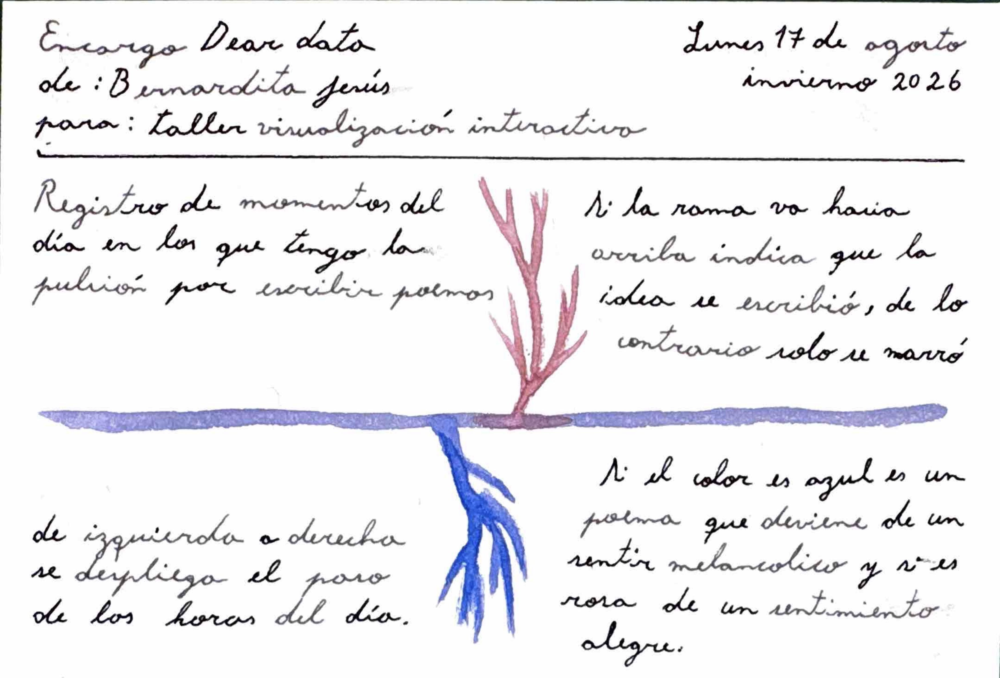
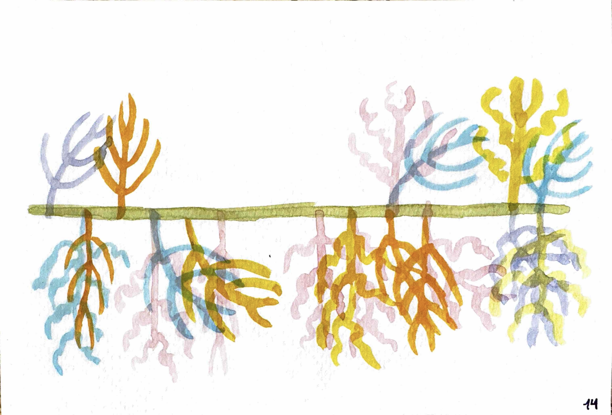
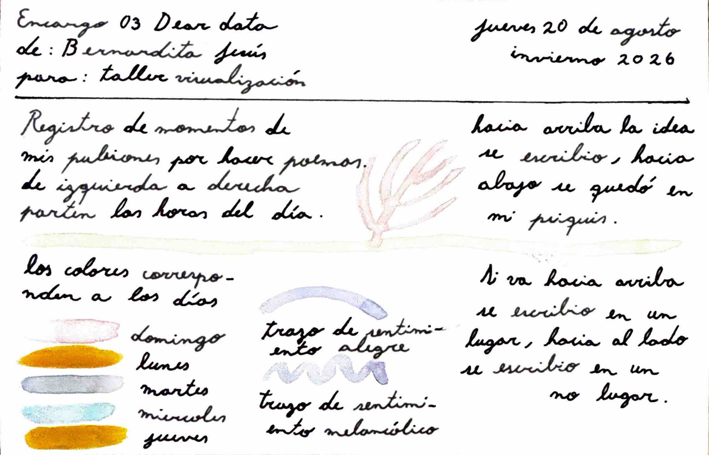
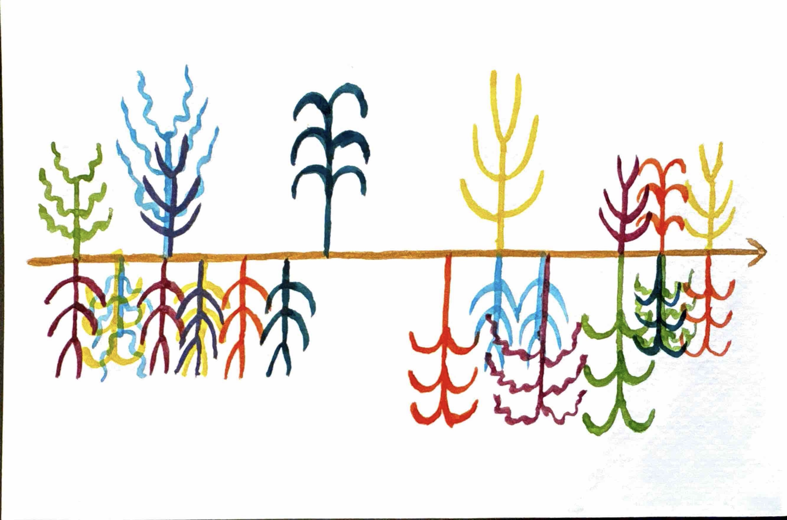
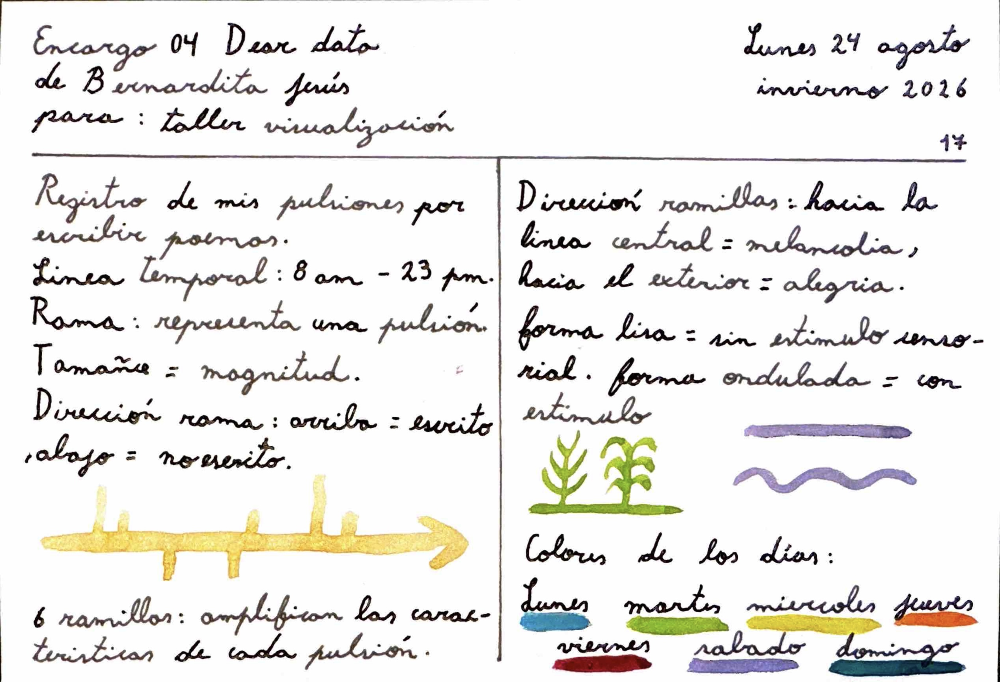

← Volver a proyectos
Web Sublimación poética
Web · Visualización de datos · 2026¿Qué despierta en mí el impulso por escribir?Este proyecto nace de la inquietud por registrar aquello que ocurre en el impulso por hacer poemas, como el momento, los estímulos sensoriales y los estados emocionales que acompañan esa pulsión, y si finalmente fue escrito o no.

Proceso de postales de datosAntes de la web, realicé una serie de postales de visualización de datos, inspiradas en Dear Data de Giorgia Lupi y Stefanie Posavec. Ese ejercicio análogo fue la base para diseñar la visualización interactiva de la web.








Proyecto realizado junto a Braulio Figueroa.